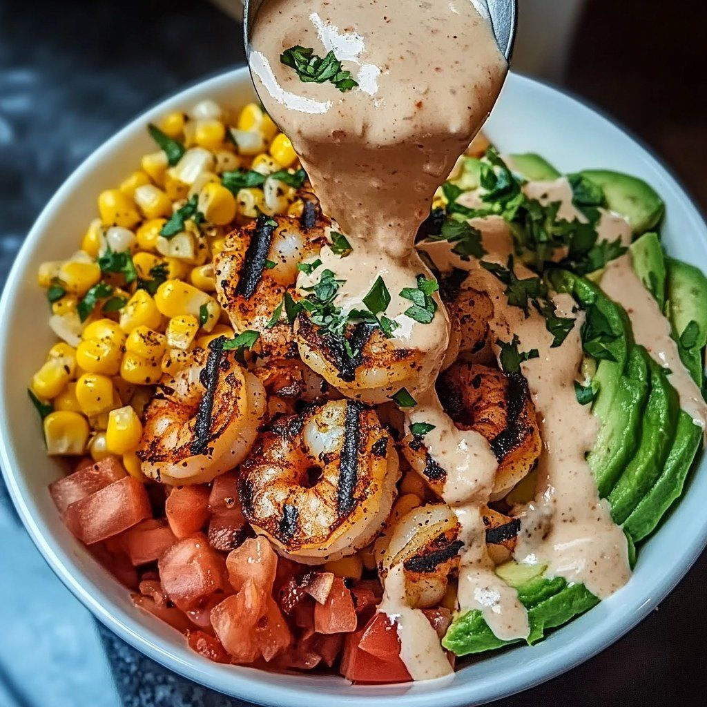

Grilled Shrimp Avocado Bowl

- Meal
- Dinner
- Serves
- 6 (scaled ×1.5 from the source's 4)
- Protein
- shrimp (shellfish); same-sauce chicken for the fish-free plate
- Cook
- grill or grill pan · ~30 min active / ~50 min total (incl. 15–20 min marinate; brown rice ~45 min, start it first) · moderate
- Make-ahead / leftovers
- marinade, corn salsa and sauce up to 2 days ahead; mash avocado just before serving / components keep, avocado doesn't
- Mediterranean
- yes
- WW tier
- light
- Status
- Trying out (probation)
Allergy: Contains fish or shellfish — not for a fish-allergic eater; same-sauce chicken is in this card
Smoky lime-and-spice grilled shrimp over brown rice with corn-and-red-pepper salsa, lime avocado mash and a spicy-lime creamy drizzle. Not Grilled Lemon Garlic Shrimp (Kenji's brined skewers, garlic-lemon oil).
Ingredients
Scaled ×1.5 for 6. Source amounts (serves 4) in [brackets]. ≈ marks a rounding.
Shrimp
- 1½ lb large shrimp, peeled and deveined [1 lb]
- 3 tbsp olive oil [2 tbsp]
- 1½ tsp smoked paprika [1 tsp]
- ¾ tsp ground cumin [½ tsp]
- ¾ tsp chili powder [½ tsp]
- ≈⅓ tsp garlic powder (⅜ tsp exact) [¼ tsp]
- Juice of 1½ limes [1 lime]
- Salt and black pepper to taste
- Fresh chopped cilantro, for garnish
Fish-free fallback (same marinade, same grill, cooked first)
- 1 boneless chicken breast (~8 oz), pounded to an even ½–¾ inch
- An extra half-batch of the shrimp marinade, mixed separately: 1 tbsp olive oil, ½ tsp smoked paprika, ¼ tsp cumin, ¼ tsp chili powder, ⅛ tsp garlic powder, juice of ½ lime, salt and pepper
Corn salsa
- 2¼ cups corn (fresh, frozen, or canned) [1½ cups]
- 6 tbsp diced red bell pepper [¼ cup]
- 6 tbsp chopped green onions [¼ cup]
- 3 tbsp chopped cilantro [2 tbsp]
- 1½ tbsp lime juice [1 tbsp]
- Salt to taste
Avocado mash
- 3 ripe avocados [2]
- Juice of ¾ lime [½ lime]
- Salt and black pepper to taste
Creamy sauce
- ¾ cup Greek yogurt or mayonnaise [½ cup] — Greek yogurt keeps it light
- 1½ tbsp lime juice [1 tbsp]
- 1½ tsp hot sauce, optional [1 tsp] — kids: leave out, pass at the table
- ¾ tsp garlic powder [½ tsp]
- ¾ tsp smoked paprika [½ tsp]
- 1½ tbsp chopped cilantro [1 tbsp]
- Salt to taste
Base (house rule: brown rice)
- Cooked brown rice — about 1½ cups dry / ~4½ cups cooked (Kitchen's amount; the source lists "cooked rice, quinoa, or cauliflower rice" with no quantity)
Method
Source method (LiLi Cooks), plus Kitchen's fallback steps for the fish-free plate.
- Rice first: start the brown rice (about 45 minutes).
- The fish-free chicken first: in a separate bowl, whisk the half-batch chicken marinade and coat the chicken. Keep it apart from the shrimp from here on.
- Marinate the shrimp: in a medium bowl, whisk the olive oil, smoked paprika, cumin, chili powder, garlic powder, lime juice, salt and pepper. Add the shrimp and toss. Marinate 15–20 minutes. (Pat the shrimp dry first so the marinade sticks.)
- Corn salsa: combine the corn, red pepper, green onions, cilantro, lime juice and salt. Chill.
- Avocado mash: halve and pit the avocados, scoop into a bowl, add the lime juice, salt and pepper, and mash with some texture left.
- Creamy sauce: whisk the yogurt or mayo, lime juice, hot sauce (if using), garlic powder, smoked paprika, cilantro and salt until smooth; thin with water a teaspoon at a time to drizzle. Spoon the fish-free sauce into the fish-free own small dish now, before any serving spoon touches the shrimp.
- Grill the fish-free chicken first: heat the grill or grill pan to medium-high. Cook the chicken on a clean section, about 5–7 minutes per side to 165°F. Move it to a clean plate, tent, and slice. Use clean tongs from here.
- Grill the shrimp: arrange without crowding and cook 2–3 minutes per side until pink, lightly charred and curled into a "C". Pull promptly so they don't toughen.
- Assemble: brown rice in each bowl; arrange corn salsa and avocado mash around it. Top with shrimp (a fish-free plate: sliced chicken) and drizzle with the creamy sauce. Garnish with cilantro.
Notes
- Servings: source serves 4; scaled ×1.5. Roundings: garlic powder (⅜ tsp → ≈⅓ tsp). With a fish-free plate on chicken, 1½ lb shrimp covers 5 generously.
- Shellfish and a fish-free plate: the house treats shrimp/shellfish as off-limits for the fish-allergic eater, the same as fish (Shrimp Fried Rice, Grilled Lemon Garlic Shrimp; oyster sauce swaps). This is a fish night for the fish-free protocol: same-sauce chicken, cooked first on a clean grill, separate bowl, separate tongs, sauce portioned before the shrimp is served. Never serve the fish-free shrimp.
- Fish quota: shrimp is shellfish, not fatty fish — does not count toward the salmon/omega-3 quota, and fish nights don't count as the all-family favorite. Under the fish-regulars rule, the card can go active after the family has eaten it twice.
- Hidden fish: none in the recipe — no fish sauce, Worcestershire or anchovy. Check the hot sauce label (a few blends add Worcestershire/anchovy); mayo and Greek yogurt are fine.
- WW tier light: grilled lean shrimp, vegetables and brown rice; the avocado is healthy fat. Use Greek yogurt in the sauce to keep it light.
- Mediterranean ✓: olive oil ✓, seafood instead of red meat ✓, vegetables ✓, brown rice ✓ (4 of 4).
- Red / processed meat, legumes, tomato: none (the photo shows diced fresh tomato, but the recipe doesn't list it; add if you like — raw, so it doesn't count as cooked tomato).
- Nutrition (as stated by the source, per serving): 320 calories, 20.3 g fat, 12.5 g carbohydrates, 22.7 g protein — the source's figure appears to exclude the rice base. Scaling to 6 keeps the per-serving numbers the same.
Source: What's Cooking? (@WhatsCookings), via X: https://x.com/WhatsCookings/status/2116334941097111681 · full recipe linked in the author's reply (https://x.com/WhatsCookings/status/2116334945463402928): LiLi Cooks, "Grilled Shrimp Avocado Bowl" by Lili Clark, https://lilicooks.com/recipes/grilled-shrimp-avocado-bowl